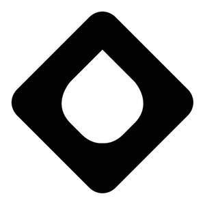

Trade Mark Journal No.2025/036 5 September 2025
UK00004224595 25 June 2025 (1,5,6,7,9,11,19,20,37,39,40,42,44)
Mark 1

Mark 2
- Class 1
- Chemicals for use in the purification of water; Chemicals for use in the treatment of waste water; Bacteria for waste water treatment; Chemical products for the treatment of water; Chemical products for the treatment of drinking water; Chemical additives for use in the cleaning of water; Chemical products for neutralising water; Chemical products for the treatment of sewage; Water-purifying chemicals; Chemicals for use in aquaculture; Chemical additives for water; Bacteria for water treatment; Microorganisms for use in water treatment; Microalgae for waste water treatment; Biological water treatment preparations; Ion exchange resins for use in water treatment; Water testing chemicals; Ion exchangers [chemicals]; Chemical compositions for water treatment; Ceramic materials in particulate form for use as filtering media; Filtering media [chemical] for water.
- Class 5
- Microbicides for water and waste water treatment; Fungicides for water and waste water treatment; Parasiticides for water and waste water treatment.
- Class 6
- Modular building units (metal-); Modular portable building structures (metal-); Modular portable buildings of metal; Prefabricated building components (metal-); Modular prefabricated steel framing; Building structures of metal; Water tanks (metal-); Water reservoirs of metal; Ducts of metal for housing water pipes; Ducts of metal for trunking conduits for liquids; Modular metallic structures; Floating metal structures for treatment of bodies of water; Floating metal floors; Floating docks and walkways.
- Class 7
- Water pumps; Water separators; Waste management and recycling machines; Sewage treatment machines; Water pumps for water treatment systems; Aeration pumps for bodies of water; Aeration pumps for water treatment systems; Water supply machines [pumps].
- Class 9
- Water meters; Water level gauges; Water flow meters; Liquid level meters; Water temperature gauges; Liquid temperature gauges; Water temperature regulators; Ducting for electrical cables; Water leakage detection alarms.
- Class 11
- Water filters; Water treatment apparatus for water purification; Waste water treatment and purification installations; Bioreactors for use in the treatment of waste water; Waste water purification installations; Industrial waste water purification plants; Biological reactors for clarifying industrial effluents; Membranes for the filtration of water; Membrane filtration units for water treatment; Membrane purifying apparatus for the purification of water; Reverse osmosis filtration units; Membranes for reverse osmosis units; Reverse osmosis membrane filters for water treatment; Reverse osmosis elements for reducing the brackishness of water; Water desalination apparatus using reverse osmosis; Reverse osmosis elements for reducing the salt content of water; Reverse osmosis elements for industrial use in reducing the salt content of water; Reverse osmosis elements for domestic use in reducing the salt content of water; Water treatment filters; Water purification filters; Waste water treatment tanks; Water purification tanks; Water treatment units for aerating and circulating water; Installations for water treatment under osmotic process; Ultraviolet sterilisation units (water treatment equipment); Ultraviolet water sterilisation units for industrial use; Chemical installations for conditioning drinking water; Water purification, desalination and conditioning installations; Water desalination plants; Water control valves; Water regulating apparatus; Water taps; Water heaters [apparatus]; Moving bed biofilm reactors; Ion exchange installations; Aeration apparatus; Water disinfection installations; Transportable instruments for processing water; Apparatus for decontaminating water; Apparatus for waste water purification. Regulating and safety accessories for water installations.
- Class 19
- Modular building units (non metallic-); Modular units (non metallic-) for constructing prefabricated buildings; Water tanks (non metallic-) [structures]; Plastic water conduits for water treatment systems; Ducts made of plastics for trunking pipes for liquids; Timber modular building units; Timber prefabricated buildings for water and waste water treatment; Transportable buildings of timber; Modular portable buildings of timber; Water pipes (non metallic-); Floating non-metallic structures for treatment of bodies of water; Floating docks and walkways, not of metal; Floating floors.
- Class 20
- Plastic water tanks; Water tanks (non metallic-); Water storage tanks (non metallic-); Tanks (non metallic-) for transport of chemicals for water treatment; Tanks (non metallic-) for storage of chemicals for water treatment.
- Class 37
- Cleaning of water tanks; Installation of water tanks; Installation of water pipes; Installation of water supply apparatus; Installation of water treatment systems; Maintenance and repair of water and waste water treatment systems; Cleaning of water supply plumbing; Construction of steel structures for water treatment systems; Erection of prefabricated buildings and structures for water and waste water treatment; Building and construction services for water and waste water treatment; Supervision and inspection of building and construction of water and waste water treatment systems and structures; Civil engineering relating to water and waste water treatment.
- Class 39
- Supply of water; Water supply; Storage of water in reservoirs; Storage of water in tanks; Storage of chemicals for water and waste water treatment and purification; Transport of water by pipeline.
- Class 40
- Water treatment; Water purification; Waste water treatment; Environmental remediation services; Waste water reprocessing; Reclamation of material from waste; Treatment of waste water from industrial processes. Industrial treatment of effluents; Purification of waste water from industrial processes; Disposal of waste water from industrial processes; Recycling and waste treatment; Treatment of waste water from generating operations; Treatment of effluent; Sewage treatment services; Desalination of water; Providing information relating to water treatment; Rental of water and waste water treatment and purification equipment; Rental of water filters; Providing information relating to the rental of water treatment systems; Regeneration of water; Water conditioning.
- Class 42
- Analysis of water and waste water; Engineering services in the field of environmental technology; Engineering services in the field of water supply, water purification, and water treatment; Technical design and planning of pipelines for water and waste water; Technical design and planning of water purification plants; Design of water and waste water treatment systems; Design of buildings for water and waste water treatment; Research and development relating to water and waste water treatment; Biotechnical research relating to water and waste water treatment; Inspection of water and waste water treatment installations; Water quality control services; Monitoring of water quality; Environmental testing services to detect contaminants in water.
- Class 44
- Aquatic habitat restoration; Aquaculture services; Landscape architecture; Landscape design; Rental of aquaculture equipment; Advisory and consultancy services relating to aquaculture; Planting of flora; Advisory and consultancy services relating to planting of flora.
ROSS-SHIRE ENGINEERING LTD
Representative: Lincoln IP